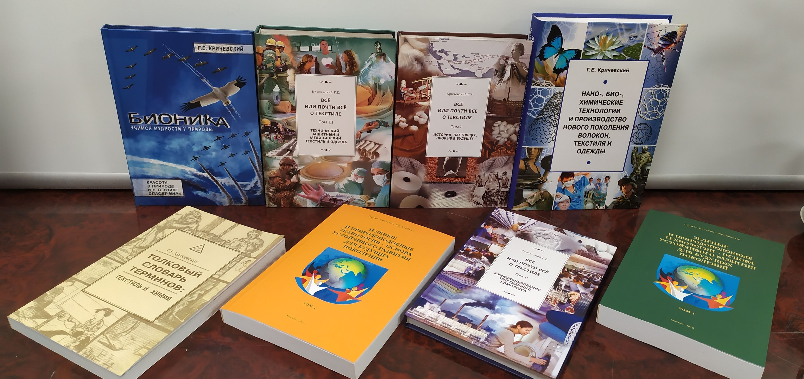

Наши принципы
НПО «Текстильпрогресс» было основано учеными – химиками текстильщиками – в те годы, которые сейчас принято именовать «лихие 90-е». Финансирование отраслевой и академической науки прекратилось, многие специалисты вынуждены были уйти из профессии. Но группа энтузиастов, объединившихся вокруг профессора Г.Е.Крического, решила искать свой путь в новых условиях и зарабатывать своими знаниями и навыками. И все последующие годы коллектив НПО «Текстильпрогресс» остается верен выбранному пути.
Герман Евсееич Кричевский. Генеральный дириектор НПО "Текстильпрогресс". Доктор технических наук, профессор. Заслуженный деятель науки РФ. Лауреат Государственной премии СССР и премии Правительства России. Президент Российского союза химиков-текстильщиков и колористов. Вице-президент нанотехнологического общества России. Эксперт ЮНЕСКО. Академик Инженерной академии
С первого дня мы старались идти по пути изобретения принципиально новых технологий и внедрения их в практическое производство. Этот путь более сложный, но перспективный. Например, комплексные исследования на стыке текстильной химии, биологии и медицины позволили создать принципиально новый тип перевязочных материалов на текстильной депо-основе с природным биополимером альгинатом. Удалось добиться пролонгированного и предсказуемого поступления лекарственных веществ из салфетки, что позволило существенно снизить нагрузку на больного.
Серия лечебных салфеток на текстильной основе с различными фармпрепаратами была разработана и запущена промышленное производство под торговой маркой «КОЛЕТЕКС» - КОмпозиционный ЛЕчебный ТЕКСтиль и удостоена Премии Правительства Р.Ф. На новом этапе особый интерес вызывают разработки на основе экологического биосинтеза наночастиц металлов с использованием в качестве биовосстановителя биополимеров и текстиля из природных целлюлозных волокон.
Некоторые договорные научно-исследовательские работы, которые проводили специалисты НПО «Текстильпрогресс»:
- Разработка лабораторного регламента по получению лабораторных образцов экотекстиля
- Разработка технических условий на медицинские изделия «Материал гидрогелевый на основе альгината натрия «Колегель-ГИАЛ-R», «Материал гидрогелевый (высокоструктурированные диски) на основе альгината натрия «Колегель-ДИСК-R»
- Разработка и изучение физико-механических свойств атравматического перевязочного материала
- Выбор полимеров для разработки состава лекарственного средства для лечения лучевого цистита
- Проведение исследований и разработка лабораторного регламента получения материалов из целлюлозных волокон, содержащих нано-частицы серебра по одностадийной технологии
- Разработка лабораторной технологии получения, показателей качества и методик контроля качества биодеградируемого лекарственного средства на основе природных полимеров для лечения лучевого цистита
- Проведение патентного поиска по использованию солей металлов для получения материалов, содержащих нано-частицы
- Изучение возможности применения солей металлов для создания материалов с лечебными свойствами
- Исследования возможности создания гидрогелевых композиций с антимикробными свойствами на основе нано-частиц серебра
- Разработка композиции с использованием отечественного природного сырья для изготовления косметических масок
- Разработка защитных текстильных полифункциональных материалов с радиопротекторными и радиосенсибилизирующими свойствами
- Разработка технологии получения инновационных трансдермальных систем на текстильной основе с различными биологически активными наполнителями для повышения эффективности лечения различных заболеваний
- Разработка гидрогелевых формоустойчивых изделий медицинского назначения с антиоксидантными, иммуномоделирующими и противоопухолевыми свойствами
Работы велись по заданию Фонда содействия инновациям, Минпромторга РФ, Департамента поддержки и развития малого и среднего предпринимательства города Москвы, ОАО «НИИИТМ», ФГБУ «РНЦРХТ им. ак. А.М. Гранова, а также ряда коммерческих фирм.
НПО «Текстильпрогресс» выросло из научной школы, поэтому мы считаем совершенно необходимым поддержание старинной академической традиции эстафеты научных поколений. Мы всячески поощряем преподавательскую учебную деятельность наших сотрудников, многие из которых являются научными руководителями аспирантов и докторантов. Мы гордимся тем, что при нашем непосредственном участии двенадцать молодых ученых получили степень кандидатов, а шестеро стали докторами наук. Некоторые из них стали частью нашего коллектива.
«Единица – вздор, единица – ноль, даже если очень важный…», писал Маяковский. Науку нельзя делать в одиночку, это коллективный процесс, причем идущие в одном направлении исследователи могут жить на разных концах света. Их усилия объединяют и обобщают книги, без которых наука обречена. Мы понимаем это и уверены, что написание и издание научной литературы – важнейшая задача каждого исследователя. Поэтому «Текстильпрогресс» всеми силами и способами помогает сотрудникам реализовывать свой научный потенциал. Даже если в наше время это не всегда приносит материальные дивиденды.
Мы уверены, что современный научный коллектив не имеет права «вариться в собственном соку» - любой ученый просто обязан держать руку на пульсе современной науки, чувствовать актуальные проблемы, понимать тренды развития. А значит, мы должны активно участвовать в жизни научной периодики, которая сейчас почти полностью ушла в интернет. НПО «Текстильпрогресс» участвует в создании журнала «НБИКС-Наука.Технологии», главным редактором которого является руководитель НПО профессор Г.Е.Кричевский.